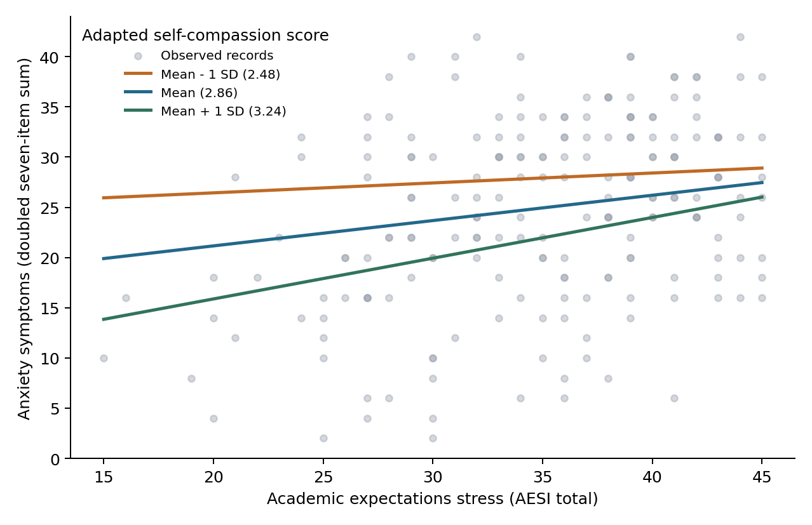

Sanjida Alom Borsa
I study how schools can recognize emotional distress in young people early, and how to measure it fairly in the language and context students actually live in.
I hold an M.Sc. and B.Sc. (Honours) in Psychology from Begum Badrunnesa Government Girls' College, University of Dhaka, and have clinical experience in the Department of Psychiatry at Dhaka Medical College Hospital and at Popular Diagnostic Centre. I am applying to Ph.D. programs in School Psychology.
Three studies, one direction
Each study looked at student mental health in Bangladesh from a different angle. Together they point to the questions I want to pursue in doctoral research.
The studies
Each project page covers the question, the study design, the main results, and the figures.
A Bengali scale for illness anxiety
I built and tested a 21-item Bengali scale with 480 students. It showed high reliability (α = .92) and good model fit, and care-seeking scores tracked self-reported doctor visits.
Read the study
Under pressure to succeed
Does self-compassion protect university applicants from the anxiety that comes with expectations? In 200 candidates it went with lower anxiety, but it did not buffer the effect of stress.
Read the studyParadoxical connectivity
Among 100 Dhaka secondary students, internet addiction was unrelated to mental health. Boys reported more distress than girls despite similar internet use.
Read the studyWhere my research is going
In doctoral study I want to combine student, teacher, and family reports, follow students over time, and build Bengali-language tools that schools in Bangladesh and similar resource-constrained settings can use.